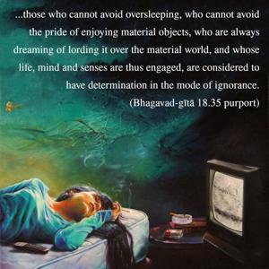

And that determination which cannot go beyond dreaming, fearfulness, lamentation, moroseness and illusion – such unintelligent determination, O son of Pṛthā, is in the mode of darkness.

It should not be concluded that a person in the mode of goodness does not dream. Here “dream” means too much sleep. Dreaming is always present; either in the mode of goodness, passion or ignorance, dreaming is a natural occurrence. But those who cannot avoid oversleeping, who cannot avoid the pride of enjoying material objects, who are always dreaming of lording it over the material world, and whose life, mind and senses are thus engaged, are considered to have determination in the mode of ignorance.